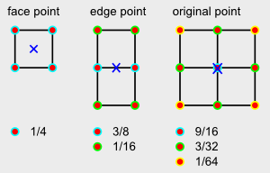

Current FPS:
Average FPS:
This project is implemented using the javascript "SoftEngine" developed using this tutorial and extended to include the functionality outlined below. The "Soft" in the "Soft Engine" refers to the fact that all graphical computation is being done programmatically and processed solely by the processor and NOT the shaders available in a machine's GPU. All math done to accomplish the extended functionality is done via the data structures housing the vertices and faces.
Key Commands:
'P' to toggle Phone Shading algorithm: Per-pixel color determination based on interpolation of each triangle's vertex normals. This is accomplished by
1) Computing vertex normals based on surrounding face normals
2) Interpolating normals between connected vertices
3) Interpolating these values accross the face of the polygon during scan line processing
'G' to toggle Gouraud shading: Per-vertex color determination based on vertex normal intensity. This is accomplished by
1) Computing each vertex normal of polygon
2) Computing intensity of vertex color via surrounding face normals
3) bi-linearly interpolate across polygon using solely vertex intensities
'F' to toggle flat shading: The most simple of the three, based solely on the angle between the polygon's surface normal and the light source
'+' (NUMPAD +) to increase Catmull-Clark subdivision by 1 iteration/step
The scheme used for implemented this algorithm is shown below. Each vertex added during an iteration is computed accordingly.
Due to the limitations of vertex and face storage, careful consideration had to be made in order to prevent data inaccuracies in modifying vertex and face connections and orientation.
This implementation uses a "half-edge mesh" (doubly linked list) to navigate from one vertex to another and back again. This makes the load time of the overall mesh MUCH shorter than something utilizing a more "brute-force" method.
